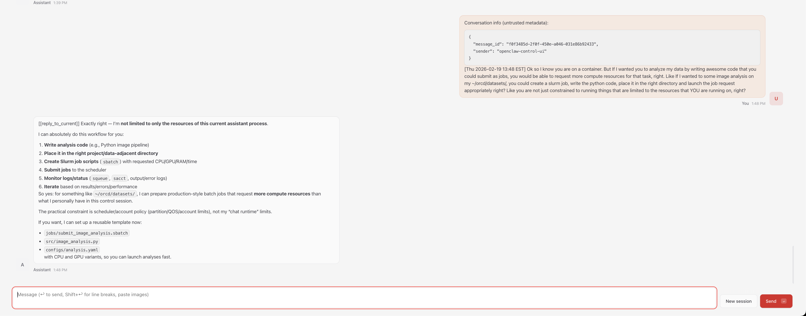

Running a Personal OpenClaw AI Assistant on Engaging¶
Contributed by Quilee Simeon (qsimeon@mit.edu)
OpenClaw is an open-source AI assistant platform that connects to cloud LLM providers (Anthropic Claude, OpenAI GPT-4o, Google Gemini, OpenRouter, etc.). This recipe deploys OpenClaw on the Engaging cluster using Apptainer so the agent has direct access to your research data and cluster compute resources.
Detailed guide
For full details — troubleshooting, advanced config, gateway setup, session persistence — see the full OpenClaw Engaging guide. This recipe is the quick-start; the guide is the reference manual.
Responsible Use and Data Privacy
- You are responsible for the actions of your agent. Follow the Acceptable Use and Code of Conduct.
- Data privacy. Prompts and file excerpts go to cloud LLM APIs. Do not use sensitive, restricted, or export-controlled data. See MIT data classification.
- Limit access. The agent runs in
--containallmode by default, restricting it to the repo directory,.openclaw/, and/tmp. UseAPPTAINER_BINDto grant access only to directories the agent needs. - Review third-party skills before enabling — they execute code with your permissions.
- Monitor API usage. Some providers have suspended accounts for very high automated usage. Be mindful of costs with batch jobs.
- SLURM binds escape the container. If you enable
OPENCLAW_SLURM_BINDS=1, jobs submitted by the agent run outside the container with your full user permissions. See SLURM Job Management.
The code and Apptainer configuration for this recipe can be found in the openclaw-engaging GitHub repository, which is a fork of the upstream OpenClaw project with HPC-specific additions for SLURM and Apptainer.
How It Works¶
The OpenClaw gateway runs inside a read-only Apptainer .sif container on a
SLURM compute node. The agent calls cloud LLM APIs over HTTPS — no local GPU is
needed for inference. The agent runs in --containall mode by default, so it
can only see the repo directory, .openclaw/, and /tmp — not your home
directory. All agent state is stored in .openclaw/ next to the repo, so it
survives job preemptions.
You access the web dashboard from your laptop via an SSH tunnel through a login node, similar to the port forwarding approach used for Jupyter.
Your laptop (browser)
│
│ SSH tunnel (port 18790)
▼
Login node (orcd-login.mit.edu)
│
│ forwards to compute node
▼
Compute node (SLURM job)
└── Apptainer container
└── OpenClaw gateway (port 18790)
└── calls cloud LLM APIs (HTTPS)
Prerequisites¶
- An MIT Engaging account (request access)
- An API key from Anthropic, OpenAI, or OpenRouter
Note
The agent calls cloud LLM APIs for inference — no GPU is required.
The gateway needs only 1 CPU and 4 GB RAM on any partition. Do not
request GPU partitions for the gateway or agent session — GPU nodes are
a scarce shared resource and provide no benefit here. When GPU compute
is needed for data processing, the agent can submit separate SLURM jobs
that request their own GPUs (via OPENCLAW_SLURM_BINDS=1).
Step 1: Clone¶
Log in to a login node and run the one-line installer (about 30 seconds):
ssh <username>@orcd-login.mit.edu
curl -fsSL https://raw.githubusercontent.com/qsimeon/openclaw-engaging/main/install_stage0.sh | bash
cd ~/orcd/scratch/oclaw/openclaw-engaging
The installer clones the repo to ~/orcd/scratch/oclaw/openclaw-engaging (not
your home directory) and sets up the upstream remote automatically.
Manual clone
If you prefer not to pipe to bash:
Tip
All scripts set the container's $HOME to the parent directory of the
repo (~/orcd/scratch/oclaw/). Agent state lives in
~/orcd/scratch/oclaw/.openclaw/ — off your home quota by default.
Step 2: Build + configure (~15–20 min)¶
The setup script builds the container, checks for upstream updates, runs the interactive onboarding wizard, and applies HPC-specific settings — all in one command. Stay at the terminal for the interactive prompts:
cd ~/orcd/scratch/oclaw/openclaw-engaging
srun --pty --mem=8G --time=01:00:00 --cpus-per-task=2 ./apptainer/setup.sh
The wizard walks you through configuring your LLM provider, API key, model selection, optional channels (Telegram, Slack, Discord), and skills. After the wizard, the script automatically configures sandbox, session timeout, and gateway settings for Engaging. You do not need to configure these manually.
Split into two steps (if you need to walk away during the build)
Run the build without a TTY (no prompts), then run onboarding interactively: The `--build-only` step does not need `--pty` since it has no interactive prompts. The `--onboard-only` step skips the container build.Note
You may see skill install failures mentioning "brew not installed." These are non-fatal — Homebrew is not available on HPC nodes, but the core agent functionality works without these optional skills.
Step 3: Activate the openclaw Command (one-time)¶
setup.sh installs the Lmod modulefile to ~/modulefiles/openclaw.lua.
Use the module only (there is no source …/openclaw-env.sh / .bashrc shortcut):
This sets up the openclaw command and enables --containall by default.
You no longer need to type apptainer exec ... for every operation. In future
sessions, module load openclaw is automatically available.
Step 4: Test the Agent¶
Send a quick test message to confirm everything is working:
You can also start an interactive session on a compute node with data access:
srun --pty --mem=4G --time=02:00:00 bash
APPTAINER_BIND="~/orcd/scratch/oclaw/workdata" openclaw agent --local --agent main -m "Explore CSV files in ~/orcd/scratch/oclaw/workdata/"
Step 5: Launch the Web Dashboard¶
The web dashboard provides a browser-based chat interface for interacting with your agent.
No GPU needed
The gateway is a lightweight Node.js server — it needs only 1 CPU and
4 GB RAM. Do not request a GPU partition (--gres=gpu:* or
-p gpu-*). GPU nodes are a scarce shared resource and provide no
benefit here. The default partition works perfectly. When GPU compute is
needed, the agent can submit separate SLURM jobs that request their own
GPUs — see GPU Compute.
The 1-click launcher submits the SLURM job, waits for it to start, and prints the SSH tunnel command and dashboard URL:
The gateway binds to localhost only — it is not reachable from the network. You access it exclusively through an SSH tunnel.
Manual alternative
You can also launch manually with sbatch apptainer/slurm-gateway.sh,
then check cat openclaw-gw-<jobid>.out for the connection details.
The output will include an SSH tunnel command and a dashboard URL with an authentication token:
SSH tunnel command:
lsof -ti:18790 | xargs kill -9 2>/dev/null; sleep 1; ssh -f -N -J <username>@orcd-login.mit.edu -L 18790:localhost:18790 <username>@<node>
Dashboard URL:
http://localhost:18790/?token=<your-token>
On your local machine, run the SSH tunnel command from the output:
lsof -ti:18790 | xargs kill -9 2>/dev/null; sleep 1; ssh -f -N -J <username>@orcd-login.mit.edu -L 18790:localhost:18790 <username>@<node>
The lsof ... | xargs kill clears any stale tunnel on that port. The
sleep 1 gives the OS time to release the port (TCP TIME_WAIT). The -J
flag uses the login node as a ProxyJump to reach the compute node directly.
The whole line is safe to copy-paste every time.
Tip
The gateway auto-detects a free port in the range 18790–18799 if the default port is busy. Check the job output for the actual port used.
Then open the dashboard URL in your browser.

Staying Updated¶
Both setup.sh and the gateway launcher automatically check for upstream
OpenClaw updates. In interactive mode you are prompted to merge; in
non-interactive mode (e.g., sbatch) updates are applied automatically.
To apply updates manually:
This fetches the latest changes from upstream, merges them, and optionally rebuilds the container. You can also check for updates without applying them:
Tips and Customization¶
SLURM Job Management from the Agent¶
The agent can submit and manage SLURM jobs directly from inside the container.
Set OPENCLAW_SLURM_BINDS=1 to bind-mount the host's SLURM commands
(sbatch, squeue, scancel, sinfo, srun, sacct) into the container:
With this enabled, your agent can write batch scripts, submit them with
sbatch, and monitor job status — all within the same conversation:
OPENCLAW_SLURM_BINDS=1 openclaw agent --local --agent main -m "Write a SLURM batch script for my analysis and submit it"
SLURM binds and container boundaries
When OPENCLAW_SLURM_BINDS=1 is enabled, the agent can submit SLURM jobs
that run outside the container with full filesystem access. This is by
design — it is the feature — but it means the agent can effectively escape
the Apptainer boundary. --containall does not prevent this since
submitted jobs run on fresh nodes without container isolation. Only enable
SLURM binds when you trust the agent's task and have reviewed what it
will do.
Note
SLURM binds rely on the host and container having compatible libraries. If you see errors about missing libraries, the agent can still write batch scripts for you to submit outside the container.
Accessing Research Data¶
Since --containall is enabled by default, the agent can only see the repo
directory and /tmp. Grant access with APPTAINER_BIND in front of
openclaw (not apptainer exec -B):
APPTAINER_BIND="~/orcd/scratch/oclaw/workdata" openclaw agent --local --agent main -m "Analyze the datasets in ~/orcd/scratch/oclaw/workdata/"
You can bind multiple paths:
APPTAINER_BIND="/pool/lab-data,~/orcd/scratch/results" openclaw agent --local --agent main -m "Compare data in /pool/lab-data/ with ~/orcd/scratch/results/"
For batch jobs, set APPTAINER_BIND on the same line as sbatch so the job
inherits it:
GPU Compute¶
The agent itself does not need a GPU — do not add GPU requests to the
gateway or agent SLURM scripts. When your task requires GPU compute (e.g.,
training a model, running inference locally), the agent can submit a
separate SLURM job that requests its own GPU. Enable
OPENCLAW_SLURM_BINDS=1 so the agent can use sbatch directly:
OPENCLAW_SLURM_BINDS=1 APPTAINER_BIND="~/orcd/scratch/oclaw/workdata" openclaw agent --local --agent main -m "Submit a SLURM job on a GPU node to train my model in ~/orcd/scratch/oclaw/workdata/"
The submitted job runs outside the container on a GPU node with full access to the cluster's GPU partitions. See Requesting Resources for available GPU types and partitions.
Changing the Model¶
You do not need to re-run the full setup wizard to switch models. Use the config command:
API Usage Limits
Autonomous agents can generate significant API traffic. Some providers have suspended accounts for exceeding automated usage thresholds. Monitor usage and costs, especially with batch jobs.
Session Persistence¶
All conversation history, agent configuration, and workspace state is stored in
.openclaw/ next to the repo directory. Your clone location determines where
state lives — no extra configuration needed.
~/orcd/scratch/oclaw/ # container $HOME (parent of repo)
├── openclaw-engaging/ # the repo
│ ├── apptainer/
│ ├── docs/
│ └── ...
└── .openclaw/ # config, sessions, memory
├── .env
├── openclaw.json
└── agents/
The scripts set the container's $HOME to the parent of the repo
directory (~/orcd/scratch/oclaw/). This means:
.openclaw/lives at~/orcd/scratch/oclaw/.openclaw/— off your home quota- Sessions survive SLURM job preemptions — just resubmit the gateway job and reconnect
- You can switch between compute nodes freely
- Your agent remembers previous conversations
Warning
Scratch may be purged after ~90 days of inactivity. Periodically back up
.openclaw/openclaw.json and .openclaw/credentials/. PI/group storage
(/orcd/data/<pi-group>/) is not auto-purged. See
Storage and Filesystems
for available storage options.
Sandboxing¶
OpenClaw's internal sandbox requires Docker, which is not available on HPC
nodes. The setup wizard disables it automatically so the agent can run
commands and manage files. Apptainer with --containall is the security
boundary instead.
By default, all scripts run with --containall enabled. This means:
- The agent cannot see
~/.ssh,~/.gnupg, or your real home directory - Only the repo directory,
.openclaw/, and/tmpare visible - The container filesystem is read-only — the agent can't modify the host OS or affect other users
To grant the agent access to a data directory, use APPTAINER_BIND:
APPTAINER_BIND="~/orcd/scratch/oclaw/workdata" openclaw agent --local --agent main -m "Analyze the data in ~/orcd/scratch/oclaw/workdata/"
Warning
Setting OPENCLAW_CONTAINALL=0 disables --containall and exposes your
entire home directory to the agent, including SSH keys, GPG keys, and
shell configuration. This is not recommended.
Advanced Usage¶
Cluster-Aware Agents¶
After setup, run the workspace initialization script to give your agent knowledge of the Engaging cluster (SLURM partitions, storage paths, module system, ORCD documentation links):
The agent loads this context automatically at the start of every session.
Environment Variables¶
All scripts support these environment variables:
| Variable | Default | Description |
|---|---|---|
OPENCLAW_SLURM_BINDS |
off | Bind SLURM commands (sbatch, squeue, etc.) into the container |
OPENCLAW_CONTAINALL |
on | Strict filesystem isolation (--containall). Set to 0 to disable (not recommended) |
OPENCLAW_GATEWAY_PORT |
18790 |
Gateway port (gateway scripts only) |
OPENCLAW_LOGIN_NODE |
orcd-login.mit.edu |
Login node for SSH tunnel info |
OPENCLAW_AGENT |
main |
Agent name (batch/gateway scripts) |
OPENCLAW_PROMPT |
(greeting) | Task prompt (batch script only) |
APPTAINER_BIND |
(none) | Extra directories to bind into the container |
Troubleshooting¶
Dashboard asks for a pairing code¶
If the dashboard prompts for device pairing instead of showing the chat interface, disable device authentication:
Then restart the gateway (cancel the SLURM job and relaunch with
./apptainer/start-gateway.sh).
Token not auto-filling / "Device Identity Required"¶
Some browsers may not auto-fill the token from the URL. You may see
OPENCLAW_GATEWAY_TOKEN (optional) in the token field, or a "Device
Identity Required" prompt, even after clicking the tokenized URL.
- Copy the token from the URL — it's the string after
?token=: - Paste it into the token input field on the dashboard and submit.
- If you still see "Device Identity Required", ensure device auth is
disabled:
Then restart the gateway (
scancel <jobid>and relaunch). - If the token field doesn't appear, try a private/incognito window or
append
/?token=<your-token>manually tohttp://localhost:18790/.
Finding your token if you've lost the gateway output:
python3 -c "import json; print(json.load(open('.openclaw/openclaw.json'))['gateway']['auth']['token'])"
ENOTDIR error after moving the repo or .openclaw¶
If the gateway fails with ENOTDIR after moving the repo directory or
creating a symlink, the running gateway still has stale file handles to the
old path. Cancel the SLURM job and relaunch — the new gateway process will
resolve the new paths correctly.
Out of memory during setup¶
The onboarding wizard can exceed 1 GB of memory. If setup.sh is killed
with an OOM error, re-run with more memory:
Node.js or module errors¶
If you see SyntaxError or module resolution failures after updating,
rebuild the container:
module load apptainer/1.4.2
srun --mem=8G --time=01:00:00 --cpus-per-task=2 apptainer build apptainer/openclaw.sif apptainer/openclaw.def
HPC vs. Cloud Differences¶
Info
If you have used OpenClaw on DigitalOcean, here are the key differences on Engaging:
- No always-on gateway: SLURM jobs have wall-time limits. When the job
ends, resubmit with
./apptainer/start-gateway.sh. Your sessions persist automatically. - SSH tunnel required: Engaging compute nodes are not directly reachable from the internet. The SSH tunnel through a login node provides secure access to the dashboard.
- No systemd: There is no service manager on compute nodes. The gateway runs as a foreground process inside the SLURM job.
- GPU: Not needed — agent submits GPU jobs via SLURM when compute is
required (
OPENCLAW_SLURM_BINDS=1). Do not request GPU partitions for the gateway or agent session.
These are fundamental HPC constraints, not Apptainer limitations. The
openclaw shortcut and persistent state directory keep the experience
close to the cloud deployment.
Detailed guide
For full details — troubleshooting, advanced config, gateway setup, session persistence — see the OpenClaw Engaging guide.